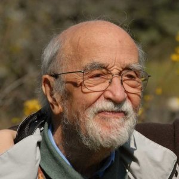

Diffeological Spaces, Part 2
Let’s dive into the history of diffeological spaces. Note that this is a history very biased towards my interests in diffeology and leaves out many important developments in the theory.
- (1973): Kuo-Tsai Chen wrote a paper where he introduced Chen spaces, a class of smooth spaces very similar to diffeological spaces, for the purpose of proving a “loop space deRham Theorem” (his words). This Theorem states that one can calculate the cohomology of the loop space of a manifold using a technique called “iterated integrals.” The important point here is being able to define differential forms on the loop space of a manifold, which is almost never a finite dimensional smooth manifold. While this is not directly relevant1 to diffeological spaces, it shows that such ideas about generalized smooth spaces were “in the air.”
- (1980): Jean-Marie Souriau wrote a paper where he introduced diffeological groups. His motivation was based in defining certain infinite dimensional smooth groups (such as groups of diffeomorphisms or symplectomorphisms) appearing in symplectic geometry.

- (1983): Souriau’s students Patrick Iglesias-Zemmour (PIZ) and Paul Donato write “Exemple de groupes différentiels : flots irrationnels sur le tore”, which studies what will become the most famous example of a diffeological space, the Irrational Torus. Later that year, Souriau gives the first general definition of a diffeological space in his paper “Groupes Differentiels Et Physique Mathematique”.
-
(1988): PIZ writes a preprint showing that there is an obstruction between Cech cohomology and deRham cohomology for diffeological spaces given by the diffeological principal \(\mathbb{R}\)-bundles with connection. It is never published.
-
(Late 1980s-2000s): PIZ develops a large amount of the theory of diffeological spaces in his thesis and several papers throughout this period. There are a couple of papers from other people, but overall not a large amount of activity.
-
(2009): Baez and Hoffnung prove that diffeological spaces are precisely concrete sheaves on the site of open subsets of euclidean spaces in their paper “Convenient Categories of Smooth Spaces.” This provides an important bridge connecting diffeology to sheaf theory.
-
(2013): PIZ publishes the first (and currently only) textbook on diffeology, appropriately named “Diffeology.” This helps attract a new generation of mathematicians to the subject.
-
(2010s): There is a huge influx of interest in diffeology. Papers are written about diffeology with connections to mathematical physics, Lie groupoid theory, foliations, homotopy theory, and more. Some particularly important papers are written in this period.
- Two definitions of tangent spaces, the internal and external, are given for diffeological spaces in “Tangent Spaces and Tangent Bundles for Diffeological Spaces.” by Christensen and Wu. They are shown to be isomorphic for manifolds, and agree with the usual definition of tangent space. They are shown not to agree in general, and many fascinating examples are given.
- A compactly generated model structure2 is proven to exist for diffeological spaces by Kihara in “Model category for Diffeological Spaces.” In order to make this model structure work, Kihara alters the diffeology on simplices.
- A deep study of diffeological vector spaces is made in “Diffeological Vector Spaces” by Christensen and Wu. Many new fascinating examples of misbehaving diffeological spaces are given.
-
(2021): Out of the pandemic sprouts the Monthly Global Diffeology Seminar and a website hub diffeology.net for everything diffeology.
-
(2020s): With the start of the new decade comes a newly energized and diverse community of diffeologists. Some notable papers are:
- In “Projective model structures on diffeological spaces and smooth sets and the smooth Oka principle”, Pavlov settles in the negative a long-standing conjecture, he proves that there does not exist a model structure on diffeological spaces that is right transferred from the Kan-Quillen model structure on simplicial sets. Instead, he proves the existence of a right transferred model structure on all sheaves on \(\mathsf{Cart}\), which the category of diffeological spaces is a full subcategory of.
- Two important papers on diffeological groupoids are written, “Diffeological Morita Equivalence” by van der Schaaf and “Bicategories of Diffeological Groupoids” by Watts, providing a solid framework for future work generalizing Lie groupoid theory.
- In “Elastic Diffeological Spaces” by Blohmann, a subclass of diffeological spaces, known as elastic diffeological spaces, is shown to admit a tangent category structure. This implies that elastic diffeological spaces have a Lie algebra structure on their set of vector fields, providing a “Cartan Calculus” for elastic diffeological spaces. This sets up a powerful framework for future work in symplectic geometry.
- (2023): PIZ finally publishes his paper “Cech-deRham bicomplex in diffeology” on the Cech-deRham obstruction for diffeological spaces that was originally written in 1988.3
-
However, Iglesias-Zemmour writes in his Introduction to Diffeology (where I obtained much of this history) that diffeological spaces were “built on the model” of Chen spaces. Later work by Stacey and Baez-Hoffnung showed how Chen spaces are directly comparable to diffeological spaces. ↩
-
Another model structure was proven to exist on diffeological spaces in “A model structure on diffeological spaces, I”, though it took many years to develop and Kihara’s help in amending previous proofs. ↩
-
I can’t help but mention that at the time of writing, there are four different versions of Cech cohomology for diffeological spaces in the literature. Indeed, there is PIZ’s, defined in his paper above. There is Krepski, Watts and Wolbert’s diffeological Cech cohomology given in “Sheaves, principal bundles, and Čech cohomology for diffeological spaces”. There is my version of Cech cohomology for diffeological spaces defined in “Diffeological Principal Bundles and Principal Infinity Bundles” which is called \(\infty\)-stack cohomology. Finally there is Ahmadi’s version of diffeological Cech cohomology given in “Diffeological Cech Cohomology.” It is currently an open question as to whether any of these cohomologies agree for all diffeological spaces. ↩